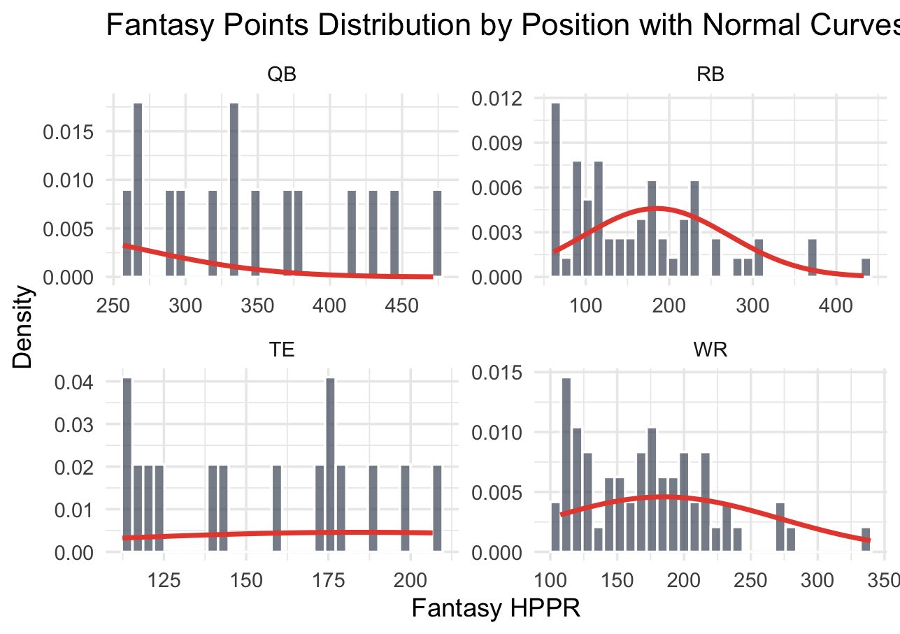

Final Report 9750
Losing your Fantasy League might not be your fault
Part 1: Introduction
Fantasy football has always been a part of sports culture. From odd last place punishments, to homemade trophies for league winners, fantasy football has always been a staple of avid sports fans. This is especially the case with Fantasy football which, in the US has the largest league. Estimates have projected that ~30 million Americans in 2022 alone played in fantasy football leagues. This number has definitely grown since, as ESPN has reported they have had over 13 million players alone in 2024, which is a record.
All this to say, fantasy football has grown from a niche game, to a staple of american culture. With almost 1/10 people in america playing the game it has become more important to people to perform well. There is even some studies that show the fantasy sports market to be worth $56.36 Billion by 2030. More than ever gambling has entered the everyday life of Americans. As shown below, US volume of betting on sports has grown from $1.5 billion in 2018 to $150 billion. Sports betting and fantasy leagues are more so than ever before about dollars and cents.
Overarching Question
Accuracy has never been more important when looking at which players to play a given week. Most of the time, projections are given by odds makers and fantasy sites, and are expected to be taken at face value. But how accurate are these projections in predicting actual performance? That is the Overarching question we aim to answer in this paper
And to answer this question, quantitative proof was required to to really construct a meaningful conclusion. thus the following specific questions are what the research chose to answer.
Specific Questions
Is there systematic bias when observing the different skill positions- are certain positions more likely to out-perform/under-perform projections?
Does player volume lead to accurate/inaccurate projections?
After establishing these questions, the only thing left to do was test out the hypothesis.
Part 2: Data
The data used to implement the research conducted stemmed from 2 major sources. 1 such source being nflreadr, which is a package on R that houses all past player data from NFL seasons.
Next to supplement this package the use of Fantasy Pros was needed. This website aggregates fantasy data across 5 major fantasy platforms and provides historical weekly projections of such. The data was scraped and joined to create a final data set that showed projections and performance of players in the 2024 season.1
Lastly the package gtrends was used to analyze player trends by importing player search trends on google and normalizing across groups.
In totality the final dataset conissted of 22 attributes ranging from yards accumulation to attempts and TD. All stats recorded vary by skill group but are applied to cover (rushing,passing,throwing).
Part 3: Analysis
As a baseline to understand projection performance, we want to see performance vs actual. Analyzing the performance of players vs their projections we get the following statistics:
| Position | Min | 1st Qu. | Median | Mean | 3rd Qu. | Max |
|---|---|---|---|---|---|---|
| QB | -19.64 | -4.000 | 0.140 | 1.368 | 5.780 | 33.440 |
| TE | -10.70 | -1.500 | 0.000 | 0.7517 | 2.250 | 29.720 |
| RB | -14.00 | -2.200 | 0.000 | 1.130 | 3.500 | 37.200 |
| WR | -14.70 | -2.100 | 0.000 | 1.224 | 3.400 | 33.400 |
We see from this table that it seems on average projections are pretty accurate for most skill position groups.With QB being the most inaccurate on average and median, and TE being the most stable around its projections. The median shows great accuracy and is arguably a better measure of performance with this data, because of large outliers.2
This initially would point to a thought process that boom weeks are just a part of normal fluctuations, that eventually revert to the mean. However, it would be more accurate to look at a subset of players, as not all players in fantasy are treated equally. Taking the 15 best performers for 2024 in both QB and TE, and top 60 performers in RB and WR3, we get the following statistics.
| Position | Min | 1st Qu. | Median | Mean | 3rd Qu. | Max | Var |
|---|---|---|---|---|---|---|---|
| QB-top15 | -17.86 | -3.98 | 1.50 | 2.568 | 7.98 | 33.44 | 86.359 |
| TE-top15 | -10.70 | -3.40 | 1.60 | 1.799 | 5.80 | 21.20 | 38.341 |
| RB-top60 | -14.00 | -3.10 | 0.40 | 1.622 | 5.30 | 37.20 | 51.651 |
| WR-top60 | -12.70 | -3.50 | 1.10 | 2.281 | 6.60 | 33.40 | 62.380 |
Based on this we see a smaller variation in the median of the RB position relative to the other skill positions. Meaningful fantasy performers-top 60 players- in the RB position seem to project well. This supports projections of RBs being more stable. This table also shows that Tight ends are the most volatile when looking at median. This is worrisome as Tight ends also have the smallest variance amongst the groups.
Not only this, but when cross referencing volume of tight ends and their appearance in the top 15 fantasy scorers, it is clear that volume is not as consistent with production for this position group.
| Position | AVG Score | % of vol leaders | % error4 |
|---|---|---|---|
| QB-top15 | 20.469 | 100% | 7.33% |
| TE-top15 | 9.1290 | 73.33% | 17.52% |
| RB-top60 | 9.6300 | 88.33% | 4.153% |
| WR-top60 | 10.138 | 88.33% | 10.85% |
What does this all mean?
Given this information we can say that projection accuracy is most accurate among running backs. They give you the best face value, what you see is what you get. This helps us make the point that positional bias does exist across projections.
Tight ends as aforementioned are the worst projected group. They do not perform in line with their projections and as such under-project performance.
Part 4: Possible improvements
The accuracy of the analysis would be enhanced further as more initial data analysis takes place. The following graph shows the distribution of tested points and the density of the points. This in turn lets us analyze whether or not the position group has extreme performers that skew our data.

The only normal looking curve comes from the RB and WR groups who have extreme performers but not to a point where its hit or miss, rather these players are exceptions to the rule. Most notably the 2024 season had 2 RBs- Derrick Henry and Saquon Barkley- have what are considered some of the best seasons ever by a RB, so that must be taken with a grain of salt. We can also explain the skew in the WR data with Jamarr Chase’s Triple Crown year.5 Overall the performance of fantasy sites is skewed around data and doesn’t have truly reliable performance vs projections.
Footnotes
Half PPR-points per reception, was used to analyze data.↩︎
Negative values represent an under performance, while positive values represent an over performance, relative to weekly projection.↩︎
Tight ends and Quarter backs only have 1 plot on a fantasy team, and assuming a 12 team lague we look for the top 15 players, Running backs and wide receivers have 2 lots each and a flex spot, so we take 2.5122 which gives us 60 spots.↩︎
\(\% error= \frac {\text{median difference}}{\text{AVG Score}}\)↩︎
The triple crown is when a receiver has the most receptions, yards, and TD’s out of all the receivers in the league. This is very uncommon.↩︎